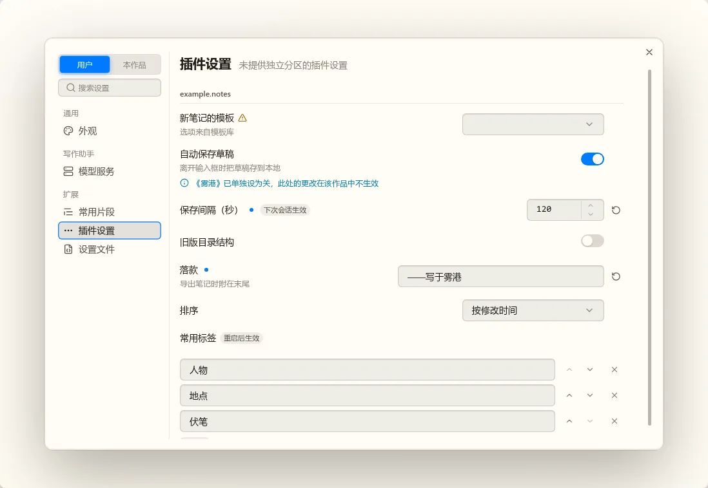
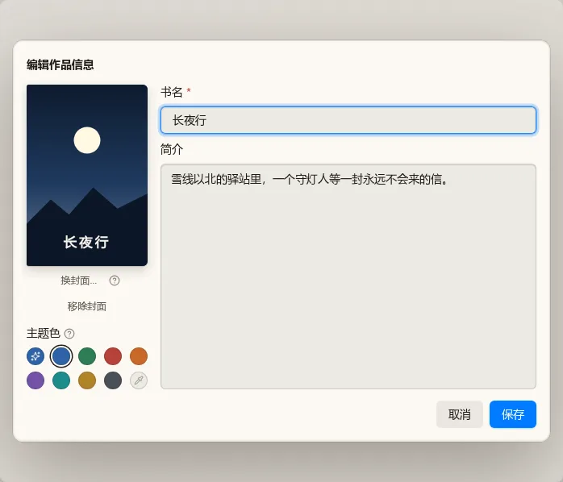
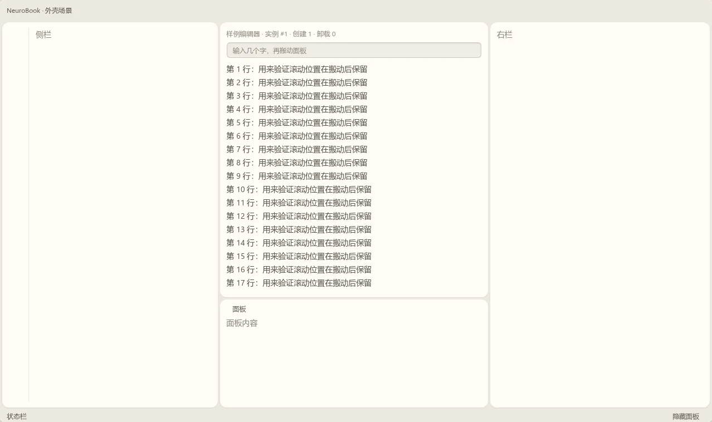
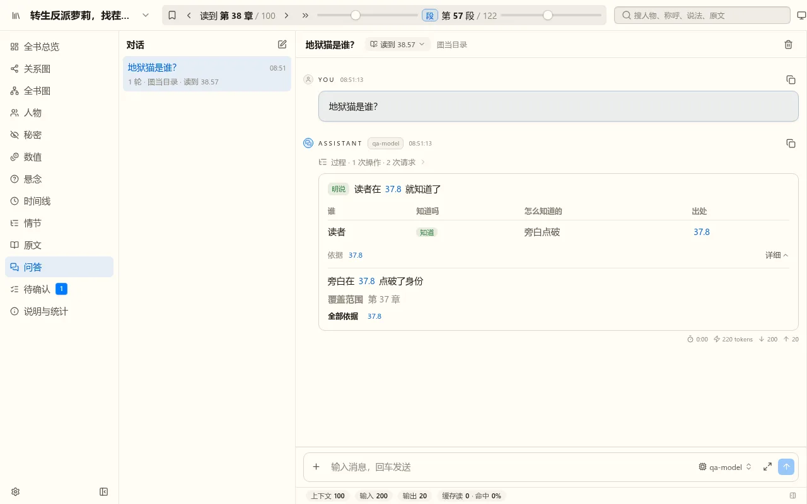
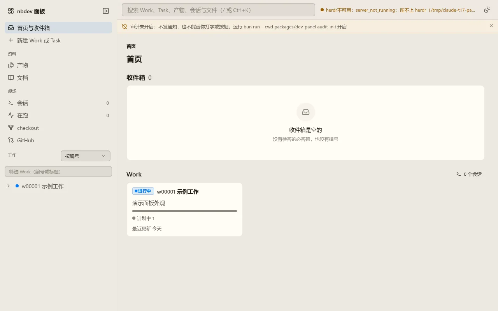

t17 对话界面第一版：第 1 片，圆角与对齐（第 7 轮）
待定全局圆角落到真实界面
这是 nbook 主题的实际代码，不是草稿：控件与按钮 6，气泡、输入框、面板 10，菜单 8，对话框 12。nb-story 和 nbdev 面板用同一个主题，一起变了。对话里的左右边距都是 12，滚动条改成浮在内容上，不再占宽度，所以右边和左边对齐了。
别的主题（aurora、editorial、macos）只有气泡跟着各自的面板圆角走，按钮和菜单不变，这几张没放进来。推荐：可以。










